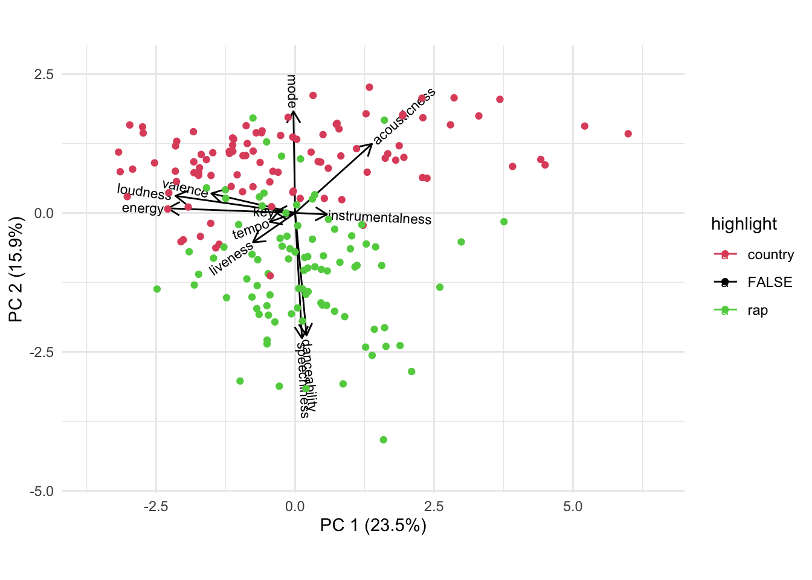
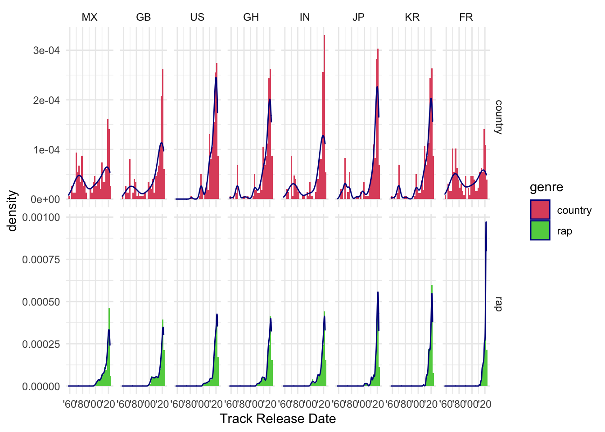
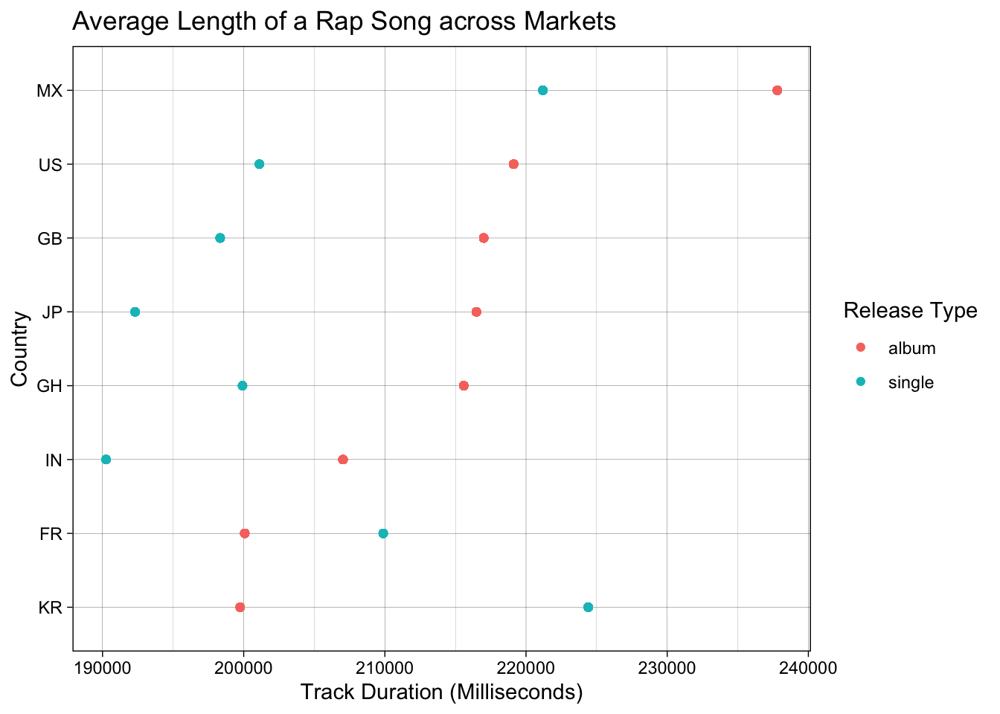
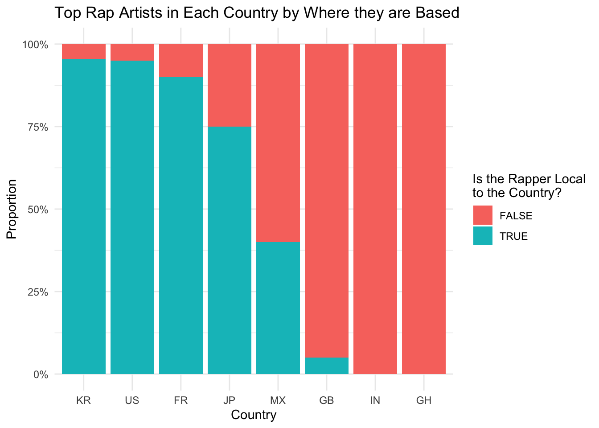

Chapter 5 Results

To start our analysis, we want to explore similarities and differences across the two genres of focus, rap and country. We constructed a biplot to explore how audio features play different roles in these two genres. This plot contains the most popular rap and country songs globally – each dot represents a song. In this plot, two clusters are formed – the two genres – and there is minimal overlap. In rap, speechiness is a key characteristic. As defined by Spotify, speechiness means the presence of spoken words in a track. Other features, such as liveness and danceability are strongly associated with rap. In country music on the other hand, mode is an important characteristic. The mode, is the vocabulary of a melody, specifying which notes can be used and indicates which have special importance. As expected, acousticness also plays an important role in country music, as does valence. Acousticness is a confidence measure from 0.0 to 1.0 of whether the track is acoustic and valence describes the musical positiveness conveyed by a track. Tracks with high valence sound more positive (happy, cheerful, euphoric), while tracks with low valence sound more negative (sad, depressed, angry). From this biplot we can see that typically country tracks are more associated with happy, cheerful sounds whereas features like danceability influence rap. It is interesting to see such a clear bifurcation between rap and country music and some preconceived notions about the two genres were validated here.
In this plot, we can see how variables are connected and again we see clustering in some of the variables. To start, again we observe danceability is high amongst rap songs and low for country songs. It is interesting to see how danceability and energy seem to have an inverse relationship – i.e. the more danceable songs seem to be lower energy and vice versa. Again we see some strong clustering around the speechiness and acousticness variables, as rap songs seem to have higher speechiness and lower acousticness compared to country music. Interestingly, rap and country seem to have alignment in terms of instrumentalness, despite the difference in speechiness. Finally, we see how there is high variation in the last few variables - liveness, valence, tempo – and there are no clear trends between rap and country music. Again, this plot serves to set a baseline in our analysis of these two industries - they share some similaries - e.g. instrumentalness, key - and there are some clear differences - in particular, danceability, acousticness.
In this plot, we begin to explore listening trends through the popularity variable. Popularity is measured on a scale of 0-100 (least to most popular) and it is a factor of number of listens and how recent those listens are. We chose the most popular rap and country songs worldwide and used their popularity rating (which is a global rating). First, we see a difference in popularity between rap and country music. The top rap songs typically have a rating of around 75-80 whereas the top country songs are around 65-70. It is also interesting to see the difference in the range of popularity. The most popular rap song has a rating in the 90s and the less popular tracks are still above 50. In the country genre, the most popular songs don’t reach 90 and the least popular go as far down as 40.
Next, we decided to break down the most popular songs by whether or not they are explicit. We typically associate rap music with more explicit language and content, especially compared to country music. As a result, one would expect that rap fans don’t hold clean songs in high regard and country fans don’t love explicit country songs. But in this plot, we see that there are quite a few non-explicit rap songs that are very popular and very popular country songs that are explicit. This goes against our preconceived notions about the rap and country industries and their fan bases. Clearly, there is a desensitization to explicit language across genres.
Now that we have a good baseline understanding of rap and country’s technical features, their overall popularity on Spotify, we will explore these genres in different markets. So, we’ve taken the top 20 rap and country artists in each genre and market, and then we’ve taken their 10 most popular songs (in each genre and market). So, for each genre and country, we have 200 of the most popular tracks. To start, we can see the most popular rap songs tend to be explicit and the most popular country songs are actually rarely explicit.
It is interesting to see the similarities across markets in terms of the most popular country songs. Rap however tells a different story. We see that most of the popular rap songs in the US, Ghana, UK, France and India are explicit. Korea and Japan on the other hand seem to listen to non-explicit rap songs. This is an interesting reflection of cultures, namely that Japanese and Korean mainstream culture is more conservative than the Western countries. In fact, one of the reasons that Korea’s music is rarely explicit is because there is a law in Korea that restricts certain explicit content if the audience is under 19. As a result, it is likely that musicians and record labels wish to avoid listening restrictions and keep their music clean. Now, that we have uncovered a trend amongst Asian countries, we are interested in exploring further the countries that seem to have similar listening trends to the States.

In this plot, we see the release date of the most popular rap and country songs. Starting with the rap genre, we see that France, Korea, and Japan listen the most to recently released rap songs. The rest of the nations seem to have very similar patterns, which is that they mostly listen to recent songs but also like older (20 to 30 year old rap songs). We believe that this reflects more recently developed rap industries in France, Korea and Japan. The United States, on the other hand, has had a thriving rap scene for decades and one can see that some of the most popular rap songs were released before 2000. Even though rap music is more popular now in America than ever before, Americans are still listening to older rappers. The data we gathered is up-to-date, so we can conclude that for English speaking countries, they have accumulated an audience of hip hop fans. For example, these people will still listening to Eminem and Kanye’s tracks released 20 years ago. On the other side, the non-English speaking countries like Japan, Korea, and France, these countries have only recently developed their own rap music and industry and still building their fan base.
Interestingly, in analyzing the country music listening trends, we see that countries like Mexico and France seem to listen to very old country music – even going back as far as 1960. The United States seems to be the only nation that almost exclusively listens to post 1990 country music. This likely reflects the popularity of country music today, and how country music fans listen to recently released music, whereas country fans in other nations are probably not as tapped into the modern country music scene as it is much less popular in their markets.

The plot above demonstrates not only how much rap has exploded in terms of popularity in Korea, but it shows that other countries have not developed their own rap industries/celebrities/culture. K-rap, which refers to “Korean-rap” clearly is very popular in Korea, with the most popular artists in the 60-80 range. Although the Korean rap artists have a smaller following than the US they easily exceed that of their Indian counterparts. Although Spotify has a genre specifically for Indian rap (aptly named “Indian-rap”), its artists are extremely unpopular with their ratings in the 20 to 50 range. Their numbers of followers are also all near zero. A few Korean rappers on the other hand are almost at 10 million followers and many others are over 1 million. This plot demonstrates how rap music has proliferated in some nations, and even developed its own scene, whereas other nations have not yet created their own mainstream rap genre.
Now, looking at the top 20 rap artists across each of the 8 countries. We see that France, Korea and Japan in particular have developed their own rap industries and scenes. The most popular rappers in these countries produce and release music locally. This matches what we saw earlier, which is that the most popular rap songs in these three nations are all much more recent, and Korean and Japanese songs are notably non-explicit. This plot also helps explain why other countries like Britain, India and Ghana follow very similar listening trends to the United States, which is that they have not developed their own rap genre and therefore are still heavily connected to American rap.
Between the group of countries that listen to their own rappers and the countries that listen to foreign rappers, Mexico seems to have its own unique rap trends. Obviously, since Mexico is a Spanish-speaking nation, it is natural for Mexicans to gravitate towards Spanish rappers. However, due to its proximity to the US, we believe it is influenced by American pop culture and so we predict that the 40% of local artists are Mexican or Latin-America based, and the rest of 60% non-local artists are from the US. We will uncover the answer in the next plot and interactive section.

In this plot, we examine how many Spotify followers each countries most popular rappers
have. This plot will help us understand how big the rap fan bases of other nations. To start, in Japan, France, and Korea, we can see that their native rappers have a small amount of followers relative to American rappers for example. However, in comparing Japanese and Korean rappers, we see that Korean rappers tend to have more following, which would indicate that it is more integrated in Korean pop culture. ALthough most of the popular rappers in Japan are native, they actually have a very low following. France on the other hand has mostly French rappers and they seem to be growing in popularity, like those in Korea. It is interesting to see in Great Britain how even though they have a British rapper in their list of most popular rappers, this rapper has an extremely small following in comparison. This speaks to the fact that American rappers have global following, whereas Korean, French, and Japanese rappers in particular are only really popular in their nations.
English is spoken in Ghana, India, the US, and the UK. People in these countries have more exposure to English rap songs and seem to listen to the most popular American rappers. For example, the rapper with the most followers in Ghana, India, the UK, the US, and Mexico is Drake and this is why Drake accumulates tremendous amount of followers, way more that rappers based on their minor languages. We have made an interactive version of this plot (in the Interactive component section).
Now that we have seen how some countries have developed their own rap industries, ad others still rely on the American industry, we have decided to come full circle and compare the technical features of the emerging rap industries. We have chosen France and Korea as they seem to have more developed and popular rap genres that have emerged in the past few years. In this plot, each point represents one of the top rap songs in its respective market. We see clustering of French tracks in the bottom half and Korean tracks in the top half. The French tracks are more associated with danceability, instrumentalness and speechiness, whereas the Korean tracks are more high energy and loud. There is certainly overlap in the middle which makes sense as the industries are still developing and probably will change more in the coming years. Interestingly, the most popular American songs seem to be scattered all over the plot. Perhaps this reflects the influence of American rap globally, not only in terms of popularity in other nations but on its impact on the sounds of emerging rap industries across the globe.